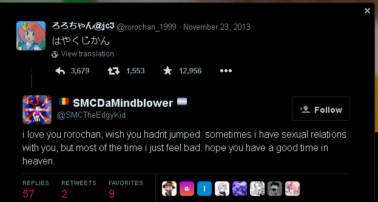
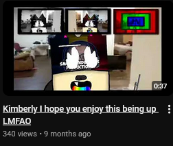
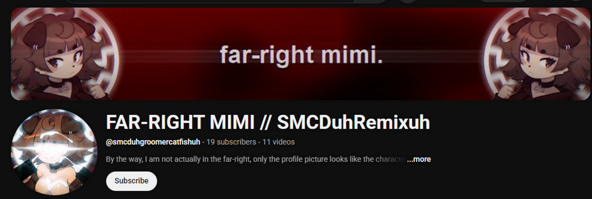
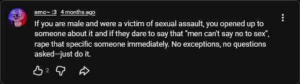
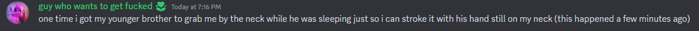
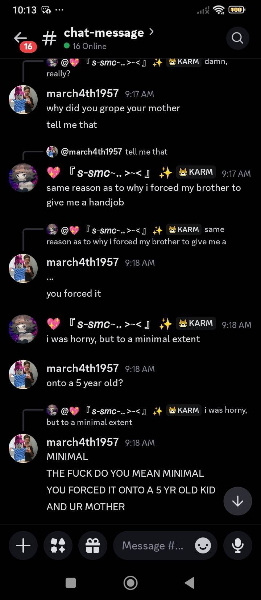
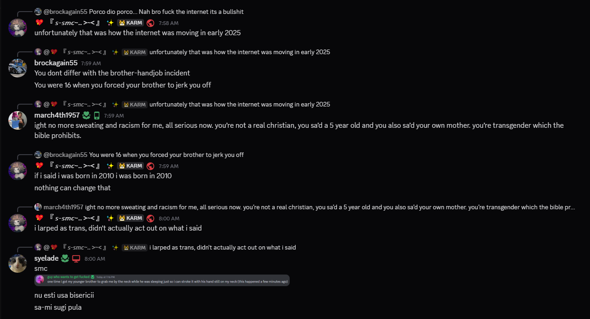
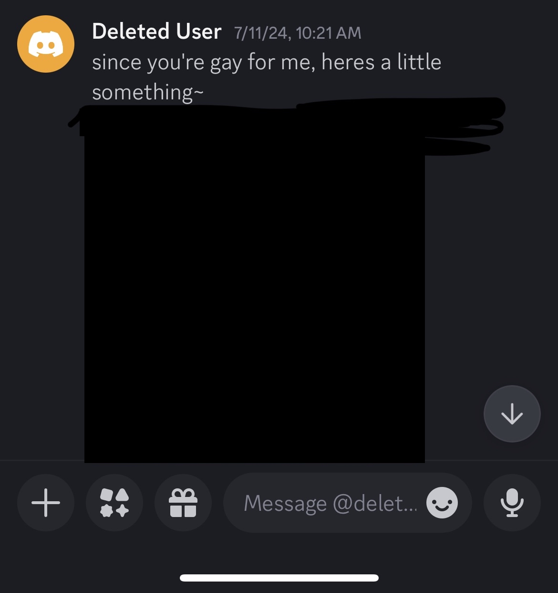
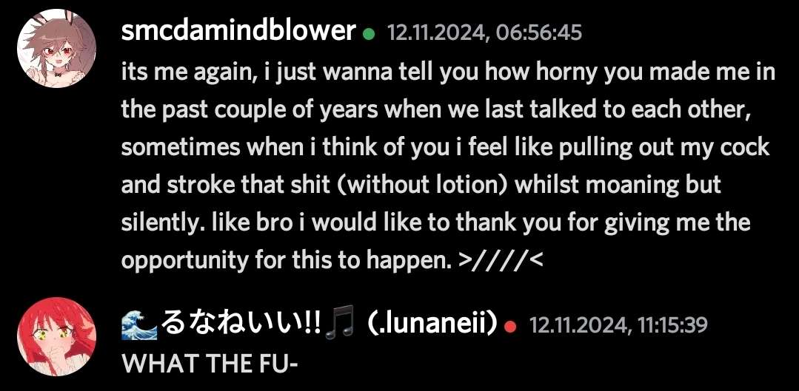

Press here for warnings.
This document goes to Alin Constantin Junior, better known online as: Sobolarlton McCrandon, later abbreviated to SMC, TehSMCSpartan, SMCDaMindblower, SMCDuhRemixuh, SMCDuhDickRiduh, and possibly more aliases I won't bother listing more. Born in September 16th, 2010, aged 15. This person is a Romanian Sparta Remixer known for his creepy actions and behaviors in the Sparta Remix Community and the Logo Editing Community despite being in his teenage years.
Sobolarlton, being in his Gacha Life era in the past, has joined the LEC and the SRC somewhere in the late 2010s, he later then focused on others, such as Countryball Community. If you've encountered him during that time, you'll know that he's that messed up despite being under 13. He also had an attraction to rorochan, a teenage japanese streamer who committed suicide by jumping.




This is the main purpose of this document, to bring awareness of his terrible acts with the evidence and informations gathered as much as possible. It's said that some of his former friends consented to each other to behave inappropriately; they regretted it later. Here's how he has been behaving lately, with the terrible acts being esculated on Discord, the messaging app:
He admitted in Ravioli's discord server to forcing his little brother, who's only four years old, to do heinous acts as detailed below. It went the same way to his mother.



"smc, you are not the door of the church. suck my dick"
He has done so much shit to her: They both unfortunately have engaged with Erotic Roleplay in private messasges, because she had an attraction towards him, despite being 12. He took a screenshot of them in which I will not provide. He has also leaked her house address in a deleted community post, where it helped someone doxx her, along with him implying that "if she loves me that much, why don't i just fuck her ;3", something like that. He once added the filename "im fucking her soon once i find her house.mp4" in one of his remixes with her. Really creepy.
I wouldn't say he's an exploited victim. However, a group in the Sparta Remix Community has discovered his comment towards a reuploaded video of Iskan's Custom Sparta Source describing his voice as "submissive". The quote "He was 14" was circulated towards him for quite a short time.
This victim shared this screenshot to the community post, saying that he regrets being gay because of this. The next post said he was 11 at the time.

He went out of nowhere to admit his attempt in sexually assaulting his six-year-old cousin in a logo-editing discord server.
It started when he wrote this message about her in her 27th birthday, which was last year. Apparently, he also "joked" about wanting to go into her house.

This is by far the most childish thing I've whitnessed yet.. And the most exhausting thing to write. He's full of shit and a hypocrite who likes to make everyone mad. Unfortunately, there are new people in the Sparta Remix Community who are willing to be friends with him, like how my past self did. So, here's an important advice: Please, keep away from the idiot. The accounts will be listed as spreadsheet here. I wouldn't suggest going through his page either. You might have seen him being "nice" or whatever positive mindset you might think of him, which is not true and that's what made people stay friends with him. For example: if you share him a secret and promised each other to not leak it, he would do it a week later. I repeat: Please stay away from him.